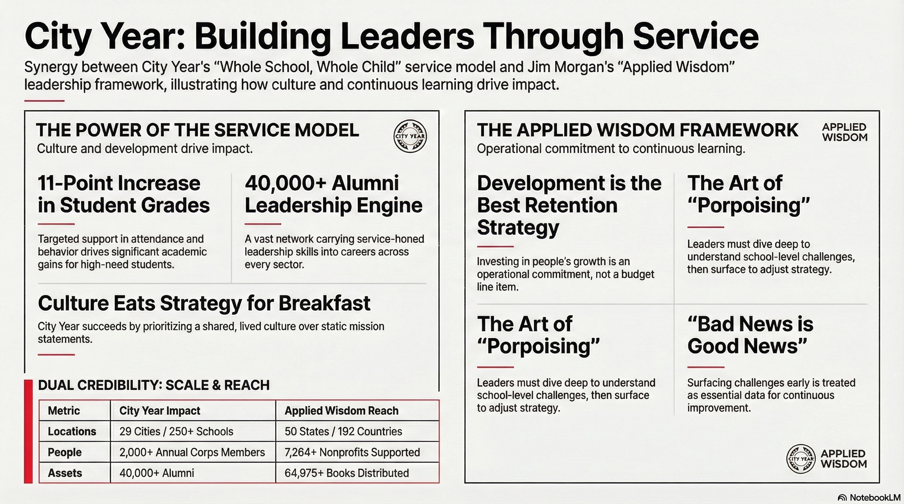

A co-branded podcast episode from the Applied Wisdom series
How City Year proves that development is your best retention strategy
Two hosts explore how City Year's national model validates Morgan's framework: invest in people's growth and they'll stay, perform, and lead.
Weekly leadership insights from Jim Morgan's playbook.
No spam. Unsubscribe anytime.
The essential insights in a shareable visual.

Presentation slides synced to the episode transcript.
How continuous learning connects to Morgan's broader culture framework.
Since 1988, City Year has placed young adults in high-need schools as AmeriCorps members, proving that when you invest in people's growth through service, the return is extraordinary.
Corps members don't just serve. They grow. Every day in a partner school is a leadership development moment. The service IS the learning.
Jim Morgan teaches that people stay where they're growing. City Year proves it at national scale.
Morgan teaches that development is a retention strategy, not a perk. Organizations that build learning into the daily rhythm, through feedback loops, stretch assignments, and teaching moments, retain their best people. The cost of replacing someone far exceeds the cost of developing them.
City Year places over 2,000 AmeriCorps members in 250+ schools across 29 cities each year. The service year is deliberately designed as a leadership development experience. Corps members stay through a demanding year not because of the modest stipend, but because the culture invests in who they're becoming.
Morgan's insight is that organizations retaining their strongest people aren't paying the highest salaries. They're the ones where culture treats professional development as a core operating commitment. People will work hard for modest pay when they feel like they're growing and see a connection between today's work and who they're becoming.
City Year's model places AmeriCorps members as near-peer mentors in high-need schools. Students with social-emotional support show an 11-point increase in grades and test scores, and students on track by 10th grade are 3 times more likely to graduate.
Jim Morgan transformed Applied Materials into a global technology leader, then dedicated himself to the nonprofit sector. His book Applied Wisdom for the Nonprofit Sector distills decades of leadership into 66 practical concepts. Free at appliedwisdomfornonprofits.org.
Download your free copy and join the community of nonprofit leaders.
Download Free Copy{kind=link}
{kind=link}